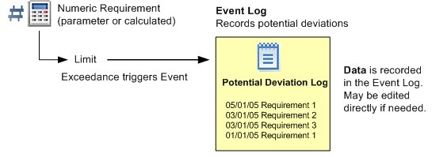
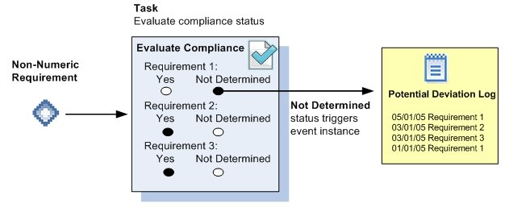
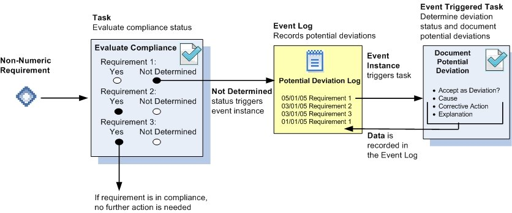

Automatic event logs trigger events automatically based on system data. Event Logs can be associated either with numeric or non-numeric requirements.
When an event log is associated with numeric requirements, events are automatically created when data exceeds the specified internal or regulatory limits.
A simple event log simply records exceedances based on limit exceedances. If it is necessary to add further information for an event, the event data can be edited directly in the log.
Limit exceedances trigger events in Event Log:

Alternately, a task may be associated with the event log. If a task is associated with an event log, a task is triggered when an event is created. The event fields on the event log are included in the task completion form and the task assignee then documents the event as needed from the event fields provided.
Event Log with task for follow-up documentation:
When an event log is associated with non-numeric requirements, an event is automatically triggered whenever a data record is saved with a compliance status of Not Determined.
Data records for non-numeric requirements are usually created via a task associated with the requirement, although it is also possible to enter data directly for a non-numeric requirement.
Task compliance status of Not Determined triggers an event in Event Log:

If a task template is associated with the event log, the event also triggers a task. The task assignee then documents the event as needed from the event fields provided on the task form.
Event Log with task for follow-up documentation:

The Begin Date for an event is the date/time of the first data point with Not Determined compliance status. The End Date is the date/time of the next data point that is In Compliance.